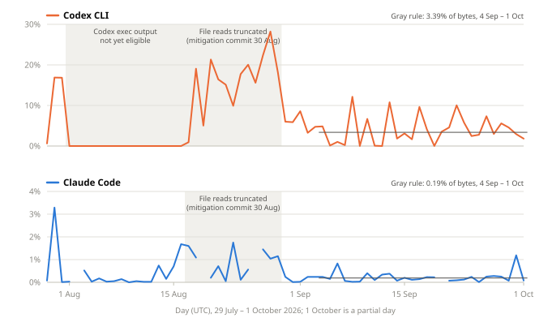
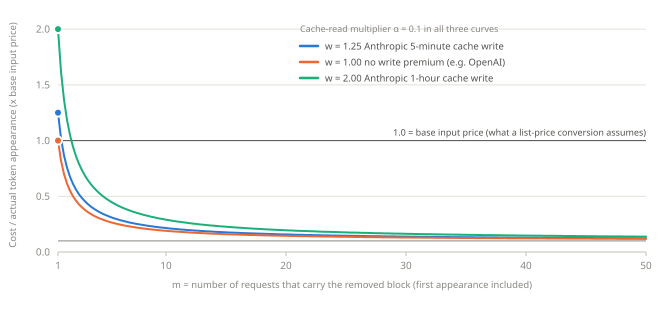

VibeRails technical note · Version 1.1 · 5 October 2026
Definition, guarantees and evidence behind the TokenSaver meter and the public counter
Revision 1.1 reconciles the Codex source and arithmetic review: meter and actual-token units, pilot-based experiment sizing, and narrower historical and implementation claims. Net task savings and preserved quality remain unmeasured.
At a glance
TokenSaver is a proxy built into VibeRails. A coding CLI such as Claude Code, Codex CLI or Grok CLI sends its model requests to TokenSaver, which shortens selected tool output and forwards the request to the provider. Responses are passed back byte for byte.
For every recorded request j, TokenSaver knows the size Bj, in bytes, of the request body the CLI submitted, and the size Aj of the body it forwarded. The meter keeps the running sum
Test is the number shown as tokens saved. The divisor 4 is a rule of thumb, about four bytes per token, applied when totals are read. No tokenizer is involved, and the result is not a provider’s token count.
A request is recorded only when all of the following hold:
/v1/messages, /responses or /chat/completions);Requests in which nothing was rewritten are recorded with zero savings. Bodies are measured as received; TokenSaver does not decode HTTP content encodings.
Coding CLIs can resend tool results as conversation history. With fixed input, command metadata, configuration and encoding, a carried result is rewritten consistently on qualifying requests. Compaction, server-managed history and changed settings can change which text is carried or rewritten. Test counts byte/4 estimates of input tokens not transmitted, summed over qualifying requests. It is not a count of distinct content removed. On two sample days in August the meter’s tally was 12.6 times (Claude Code) and 39.8 times (Codex CLI) the number of distinct characters removed. Those ratios mix bytes with characters and predate a 30 August change, so they illustrate the effect rather than measure a replay count.
While an active VibeRails root backend is open, enabled publishing attempts to report its lifetime Test using a configurable interval (15 minutes by default), when a usable API key and endpoint are available. For each pair of API key and computer name the server keeps the largest total that pair has reported, and the public endpoint sums those values with a 15-minute cache per server process. This describes inspected source, not an independent audit of deployed totals. It follows that:
TokenSaver rewrites only tool results, the text returned by commands an agent has run, and only for tools on an allow-list: shell commands for all three CLIs, including Codex code-mode execution and Grok sub-agent output. System prompts, text the user typed, tool-call arguments, tool definitions and model responses are never rewritten. In the Anthropic Messages API tool results travel inside user-role messages; only the tool-result blocks are rewritten, and any text a client places inside them is rewritten with them. The dedicated file-reading and search tools are excluded by default.
| Stage | Kind | Effect |
|---|---|---|
| Line-ending and whitespace cleanup | Lossless | Converts CRLF line endings to LF, strips trailing spaces and tabs, trims blank lines at the start and end, and shortens runs of three or more blank lines to two. |
Grouping of git status, grep and find output | Reshaping | Rearranges recognised output into a more compact layout. |
| Passing-test collapse | Lossy | Replaces runs of passing-test lines from recognised test runners with [... N passed ...]; failures, skips and summaries stay. |
| Repeated-line collapse | Lossy | Writes three or more identical consecutive lines once, followed by [xN]. |
| Long-output truncation | Lossy | Keeps the first 150 and the last 50 lines and replaces the middle with [... N lines elided ...], but only when at least 10 lines and 4,096 UTF-16 code units would be removed. |
| File-read budget | (limit) | For recognised file reads, truncation keeps 1,200 and 200 lines instead, provided the post-dedupe output is at most 262,144 UTF-16 code units; larger reads fall back to 150 and 50. |
Further limits decide what is removed:
cat, head, tail, sed, Get-Content and similar). Reads through awk are not recognised and get the ordinary budget, and diffs are truncated deliberately.Proposition 1 (byte non-growth). Write a request body as the byte string
where s1, …, sn are the encoded JSON string tokens selected for rewriting, in order and disjoint, and v0, …, vn are the bytes between them. For each i let ci be the encoded candidate produced by the pipeline, and set ai = ci if |ci| < |si| and ai = si otherwise, where |·| is length in bytes. The forwarded body is R(B) = v0 a1 v1 ⋯ an vn. Then
with equality if and only if no candidate is accepted, and every byte outside the accepted tokens is unchanged.
Proof. Concatenation adds lengths, which gives the two equalities. By construction |ai| ≤ |si| for every i, with strict inequality exactly when ci is accepted. Summing over i gives the inequality, which is strict as soon as one candidate is accepted. The vk are copied unchanged by construction, and a rejected token is replaced by itself. ∎
Corollary. Every recorded request contributes Bj − Aj ≥ 0, so the meter can only increase.
How the implementation matches the model. Each of the three provider rewriters (Anthropic Messages, OpenAI Responses and Chat Completions) copies the bytes between selected tokens verbatim, re-encodes a candidate, and accepts it only when its encoded byte count is strictly smaller than the original token’s, which preserves client escaping outside accepted spans; accepted spans are re-encoded. Any failure forwards the original body. This correspondence was established by reading the source at commit 336373c0; it is not machine-verified. Regression tests assert whole-body byte identity outside rewritten tokens for the Anthropic rewriter.
What Proposition 1 does not say.
With a fixed configuration, every stage is designed to be deterministic (a function of the text and tool/command metadata), idempotent (applying it again changes nothing) and never-growing. Reproducing earlier rewritten bytes helps preserve cached prefixes; it does not guarantee a hit, which also depends on expiry, cache boundaries and provider behavior.
| CLI | Requests | Submitted | Removed | Share | Estimated tokens (removed ÷ 4) |
|---|---|---|---|---|---|
| Codex CLI | 16,227 | 9.93 GB | 343 MB | 3.45% | 85.8 million |
| Claude Code | 16,238 | 7.71 GB | 15.4 MB | 0.20% | 3.9 million |
| Grok CLI | 1,212 | 673 MB | 1.2 MB | 0.18% | 0.3 million |

daily-series.csv in the evidence package.| Period | Codex CLI | Claude Code | What changed |
|---|---|---|---|
| 29 Jul – 16 Aug | 1.02% | 0.20% | Codex code-mode exec output was not yet eligible; from 1 August no Codex request was rewritten. |
| 17 – 29 Aug | 14.93% | 1.11% | exec output allow-listed; file reads were truncated like logs. |
| 30 Aug – 3 Sep | 5.64% | 0.20% | File reads given the larger budget. |
| 4 Sep – 1 Oct | 3.39% | 0.19% | No pipeline changes shipped. |
Reading the results.
Providers bill tokens produced by model-specific tokenizers, not bytes. Dividing by four is an estimate, and the JSON escaping of tool output inflates bytes relative to tokens. For orientation only: in the 4–8 September recount, submitted Claude Code request bytes divided by forwarded-request input usage total about 3.0 bytes per reported input token. That whole-body average includes framing and tool definitions and is not a calibration for the removed text. Exact differences require counting tokens for the original and the forwarded body of each request with the provider’s tokenizer (Section 10).
Providers can discount input that repeats a cached prefix. The historical models use Anthropic-style multipliers of 1.25 for a five-minute write, 2 for a one-hour write and 0.1 for a read; the no-write-premium curve is an OpenAI-style example. These are illustrative parameters, not independently verified current prices for every model. In the 4–8 September recount, 96.6% of Claude Code’s provider-reported input tokens were cache reads. Pin the actual model, pricing date and billing agreement before converting usage to money.
Proposition 2 (avoided cost of a removed block). Consider a block of d tokens that would appear in m requests of a conversation: written to the cache at multiplier w in the first and read at multiplier α in each of the other m − 1, with nothing else changing. Removing it avoids the input cost
in units of the base input price. Dividing by the d·m actual token appearances gives avoided cost per actual token appearance:
which falls as m grows whenever w > α, and approaches α.
Proof. The block is paid for once at w, when the first request carrying it writes it to the cache, and m − 1 times at α, when later requests read it. With nothing else changing, removing it avoids exactly G. There are d·m actual token appearances, so dividing by that quantity gives (4). The product meter instead divides removed bytes by four; equation (4) is not its monetary conversion. Its derivative is , which is negative when w > α, and v(m) → α as m → ∞. ∎

| m | w = 1.25 (Anthropic, 5-minute write) | w = 1 (no write premium) | w = 2 (Anthropic, 1-hour write) |
|---|---|---|---|
| 1 | 1.250 | 1.000 | 2.000 |
| 5 | 0.330 | 0.280 | 0.480 |
| 10 | 0.215 | 0.190 | 0.290 |
| 20 | 0.158 | 0.145 | 0.195 |
| 30 | 0.138 | 0.130 | 0.163 |
| 50 | 0.123 | 0.118 | 0.138 |
Consequence. With the assumed write/read prices and unchanged cache behavior, repeated actual token appearances carry a lower average price than uncached input. This does not price the byte/4 meter. If each appearance removes b encoded bytes and d actual input tokens, avoided cost per meter-estimated token is approximately (4d/b) times equation (4), ignoring aggregate integer rounding. Here d must be the complete-request token delta attributable to the block; an isolated substring token count need not equal that delta. The full-request token delta, byte delta and cache categories must be measured before converting the meter to money. Expiry, misses and changed continuations require separate accounting.
On flat-rate subscription plans the relevant quantity is consumption of usage limits rather than billed tokens. This note does not establish how cached input counts toward those limits.
Truncation leaves a marker so the agent can ask for the missing part. A heuristic classifier found a related call in the next turn after 19 of 35 Claude Code truncations and 146 of 448 classified Codex CLI truncations, in conversations first seen between 30 August and 1 October. No comparison group of untruncated outputs was analysed, so these rates do not show that truncation caused the calls. The classifier can count ordinary next steps, such as opening a file after reading its diff; their prevalence is not measured against a control group.
Let G be the avoided cost of the lossy removals (Proposition 2), q the probability that a removal causes an extra recovery, L the expected cost of that recovery, r the probability that a removal silently degrades the result, F the cost of that degradation, and K any other effect, which may be positive (for example, cache breaks) or negative (for example, later or fewer context compactions). The probabilities q and r are dimensionless. G, L, F and K use a common monetary unit; F requires an explicit valuation of quality loss. Specify one intervention and continuation, include all recovery within it and avoid overlapping costs. Without that valuation, report monetary cost and quality separately. The expected net saving is
which is positive exactly when
Equation (5) is accounting, not a measurement: q, L, r and F have not been measured. A historical sensitivity model, which charged a whole extra turn for every related call and used provider-wide prices on traffic from 29 July to 3 September, most of it before the 30 August change, found truncation net negative for Claude Code (break-even near a 19% re-run rate, against related-call rates of 40–75% under two classifiers) and net positive for Codex CLI. A structural reason is plausible: Claude Code’s own 30,000-character cap leaves little for truncation to remove, while each extra turn re-reads a long cached context.
Proposition 3 (no lossy compression preserves every task). For a nonempty task domain X, let φ: X → Z map full tool outputs to compressed outputs, and let g: X → Y give the correct answer to some task. A decoder h: Z → Y with h(φ(x)) = g(x) for every x ∈ X exists if and only if
Proof. If h exists and φ(x) = φ(y), then g(x) = h(φ(x)) = h(φ(y)) = g(y). Conversely, if (7) holds, define h(z) as the common value of g on the outputs that φ maps to z, and arbitrarily where there are none. Condition (7) makes this well defined, and h(φ(x)) = g(x) by construction. ∎
Corollary. Truncation is not injective on an unrestricted output domain. Two outputs with the same retained lines and omitted-line count can differ in their removed middle lines yet compress identically. For a task that distinguishes those outputs, (7) fails: no decoder can answer correctly for both from the compressed text alone. A restricted task domain can satisfy (7); deployment quality still needs evaluation on task outcomes. An agent may attempt recovery with a narrower command, incurring the recovery cost L of Section 7.2, without a guarantee of success.
| Supported | Not supported |
|---|---|
| “TokenSaver has kept an estimated N input tokens from being sent to model providers.” Footnote: “estimated as removed request bytes ÷ 4, counted on every request that would have carried them.” | “Saved N tokens on your bill”, “saved $X”, or any conversion of N to money at list prices. |
| “TokenSaver never makes a request larger: a rewrite is used only when it is smaller, byte for byte.” | “Never changes what the model needs to know”, or “no effect on quality”. |
| “On our own workstation, from 4 September to 1 October 2026, TokenSaver removed 3.45% of Codex CLI request bytes, 0.20% of Claude Code’s and 0.18% of Grok CLI’s.” | A general rate applied to other workloads (“cuts tokens by 3.45%”), or the 15–28% days of late August. |
| “TokenSaver trims tool output only. It never rewrites your prompts or the model’s replies, and it forwards the original request if anything goes wrong.” | “Lowers the cost of completing a task.” |
| Symbol | Meaning |
|---|---|
| Bj, Aj | Bytes of request j as submitted by the CLI and as forwarded |
| D, Test | Total bytes removed; estimated tokens, ⌊D / 4⌋ |
| si, ci, ai, vk | Selected string tokens, candidates, accepted outputs, untouched bytes (Proposition 1) |
| d, m, w, α | Block size in tokens, number of requests carrying it, cache-write and cache-read multipliers (Proposition 2) |
| G, v(m) | Avoided cost of a block; avoided cost per actual token appearance |
| q, L, r, F, K | Recovery probability and cost; silent-degradation probability and cost; other effects (Section 7.2) |
| φ, g, h | Compression map, task answer, decoder (Proposition 3) |
AnthropicMessagesRewriter.cs:188, CodexResponsesRewriter.cs:209, ChatCompletionsRewriter.cs:176. Meter: ITokenSavingsStore.cs:26 and LlmProxyRelay.cs:140–158. Stage catalogue: CompressionCatalog.cs.TokenSavingsController (one value per API key and computer name, increases only) and PublicTokenSavingsController (sum of all values, cached for 15 minutes).